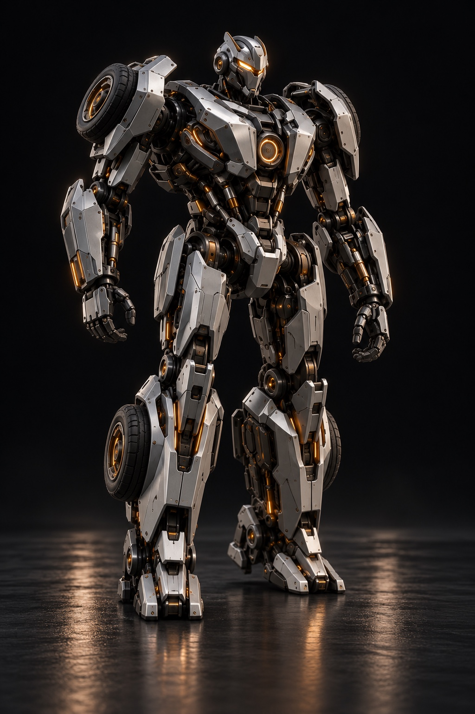
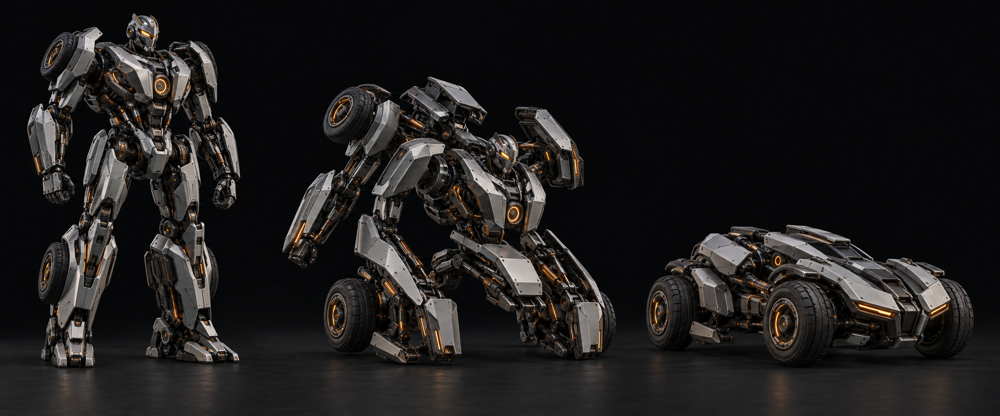
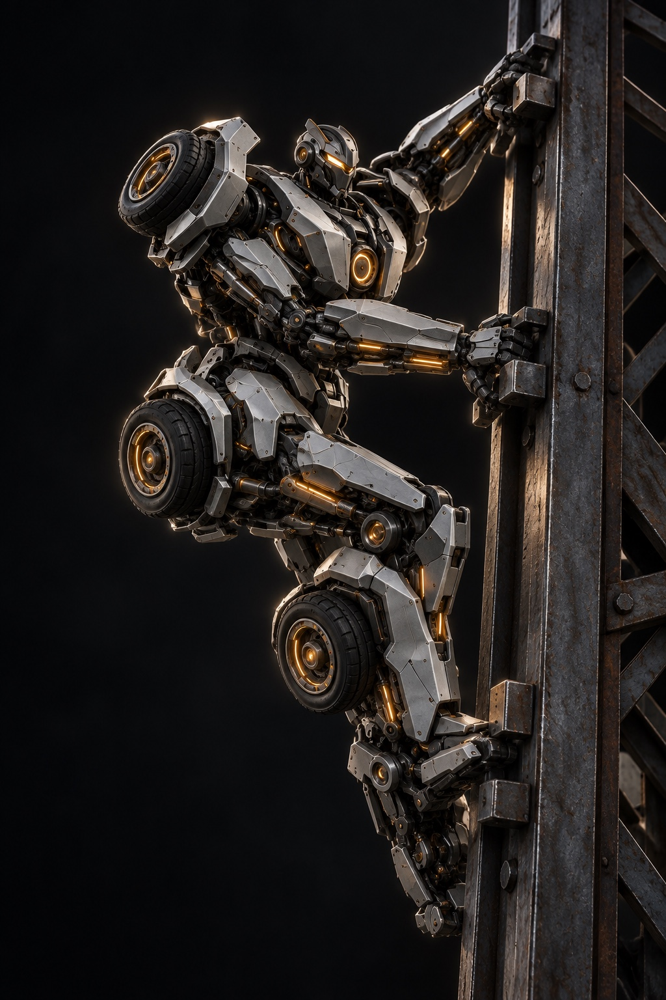

01 / WALKBipedal embodiment
A high-degree-of-freedom body for studying locomotion, balance, perception and articulated manipulation.
Robotics foundation models
Super Humanoids is developing a foundation-model approach to robotics: shared intelligence intended to perceive, reason and control across different bodies, tasks and environments.
Research-stage company · Artila Robotics Inc.

The problem
Most robot policies are built around one morphology, one sensor arrangement and a narrow task distribution. Change the body and much of the intelligence must be rebuilt.
Our hypothesis: a shared model can learn reusable representations of bodies, tasks and physical interaction.
Embodiment testbed
Reconfiguration is our hardest test: can one model retain useful physical knowledge as the body itself changes?

01 / WALKA high-degree-of-freedom body for studying locomotion, balance, perception and articulated manipulation.

02 / CLIMBA four-contact configuration for studying body-aware planning, contact transitions and load redistribution.
A compact configuration for studying efficient navigation while preserving a shared representation of the machine.
These are concept visualizations of a future research platform—not photographs of existing hardware.
Foundation-model thesis
The body may change. Useful representations of the physical world should transfer.
Represent morphology, sensors and actuation explicitly so the model can condition behaviour on the machine it controls.
Learn reusable physical representations from diverse simulated bodies, tasks, contacts and failure modes.
Fine-tune for a new embodiment and close the simulation-to-reality gap through measured hardware experience.
First proving ground
Complex facilities offer a demanding test for cross-embodiment intelligence: one mission may require floor transit, human-scale access, vertical traversal and manipulation.
Learn across bodiesTest whether physical representations transfer when morphology and contact patterns change.
Measure adaptationTrack how much data and training a new configuration needs to acquire a task.
Compound experienceTurn every embodiment and task into data for the shared model family.
Development roadmap
A proposed milestone path from research thesis to a measurable cross-embodiment MVP.
Create a structured dataset spanning simplified bodies, tasks, contacts and failures.
Train one model family across multiple simulated embodiments instead of one policy per body.
Measure adaptation speed and task success on a held-out morphology.
Transfer a constrained capability to a physical test rig and measure the reality gap.
Sample roadmap—replace stages and timing with verified company milestones before publishing publicly.
Current stage
We are not presenting a trained foundation model or working robot today. The first proof point is one shared policy that completes a measurable task across simplified virtual bodies.
Industrial partners · technical talent
We are at the beginning: defining the first cross-embodiment dataset and looking for technical collaborators who want to test the foundation-model hypothesis.
hello@superhumanoids.ai ↗